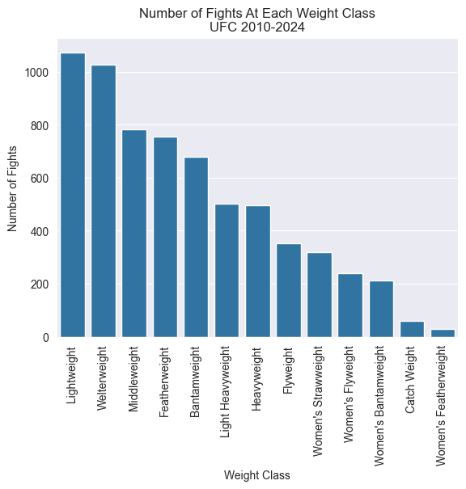
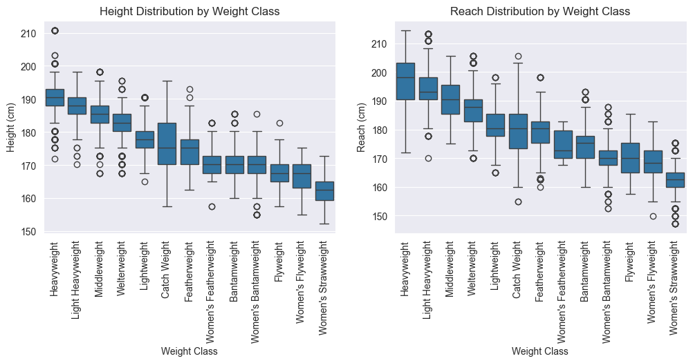
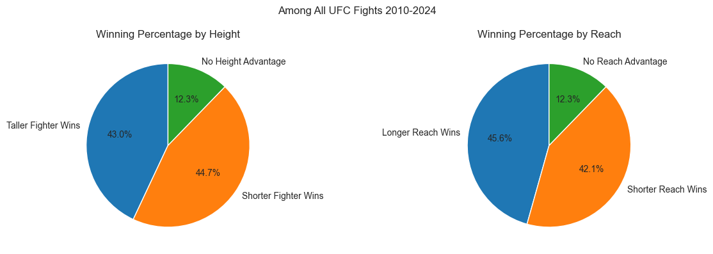
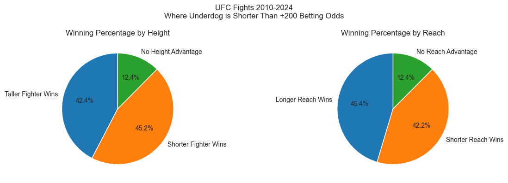
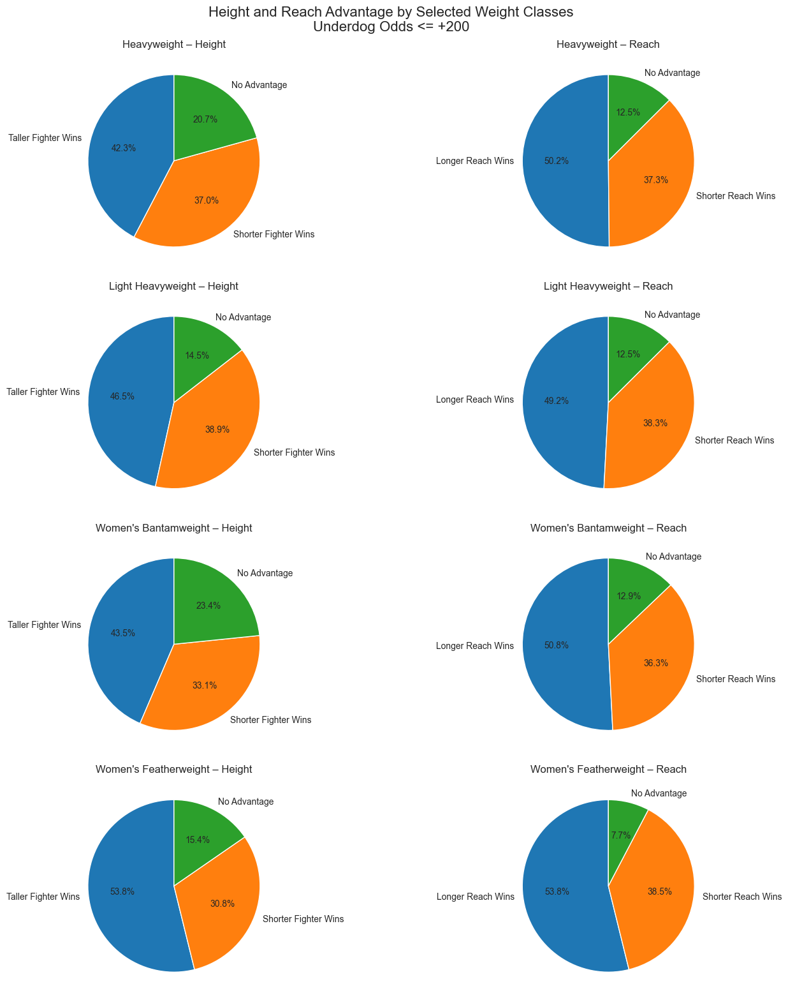
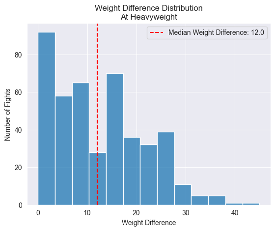
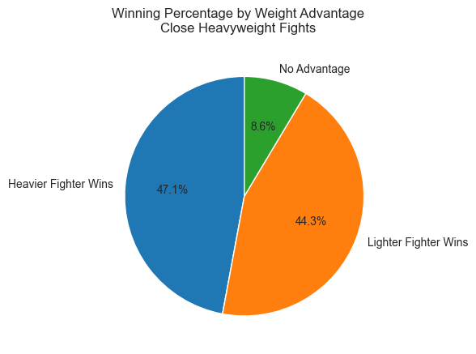

Index(['RedFighter', 'BlueFighter', 'RedOdds', 'BlueOdds', 'RedExpectedValue',
'BlueExpectedValue', 'Date', 'Location', 'Country', 'Winner',
...
'FinishDetails', 'FinishRound', 'FinishRoundTime', 'TotalFightTimeSecs',
'RedDecOdds', 'BlueDecOdds', 'RSubOdds', 'BSubOdds', 'RKOOdds',
'BKOOdds'],
dtype='object', length=118)For as long as humanity has been roaming the earth, fighting has been a part of our culture. Whether it be fighting over food as nomads, fighting over land in the feudal age, or fighting for natural resources in our current era, man always seems to find a reason for fighting.
Combat is not always confined to war, though. For centuries, we have been fighting for sport as well. Boxing matches have been recorded as far back as 6000 BC and wrestling is thought to have been a part of the first ever Olympics. Nearly every culture across all history has had some form of combat sport as part of their culture.
With this apparent obsession with violent competition, it is natural to look for any edge that one combatant may have over the other. Turn on any boxing or MMA match and you are likely to see the “Tale of the Tape” displayed before the bout, showing each fighter’s age, record, height, reach, and weight. Of course, MMA has developed to now have weight classes so weight is less of a factor, but that wasn’t always the case.
Does any of this information really matter though? Does the taller fighter or the fighter with a longer reach really have an advantage, or are we just looking for advantages where there are none? Certainly any insights found here will be broad; actual fighting skill is paramount. For example, I am 6’ 4” 190 lbs, but I would not want to get into the octagon with a man like Dustin Poirier, who stands 5’ 9” and has fought at 145 and 155 lbs. I am not built for this. But perhaps among professional fighters with equal, or at least comparable, we can learn something.
The data used for this project comes from Kaggle user mdabbert and contains data from the UFC dating back to 2010. There are 118 columns available in this dataset. We’ll mostly focus on the columns containing information about the physical attributes of our fighters.
With this data in mind, let’s take a look at how many fights have occurred at each weight class, and a table of the weights for each for reference.
weightclass_table = pd.DataFrame(
index=[
'Strawweight (W only)',
'Flyweight',
'Bantamweight',
'Featherweight',
'Lightweight',
'Welterweight',
'Middleweight',
'Light Heavyweight',
'Heavyweight'
],
columns=['Weight Limit (Lbs.)'],
data=[115, 125, 135, 145, 155, 170, 185, 205, 265]
)
weightclass_table
| Weight Limit (Lbs.) | |
|---|---|
| Strawweight (W only) | 115 |
| Flyweight | 125 |
| Bantamweight | 135 |
| Featherweight | 145 |
| Lightweight | 155 |
| Welterweight | 170 |
| Middleweight | 185 |
| Light Heavyweight | 205 |
| Heavyweight | 265 |
weightclass_counts = df['WeightClass'].value_counts()
ax = sns.barplot(x=weightclass_counts.index, y=weightclass_counts.values)
ax.set_xlabel("Weight Class")
ax.set_ylabel("Number of Fights")
ax.tick_params(labelrotation=90, axis='x')
ax.set_title("Number of Fights At Each Weight Class\nUFC 2010-2024")Text(0.5, 1.0, 'Number of Fights At Each Weight Class\nUFC 2010-2024')
You may notice one extra class that is not in the weight class table: Catch Weight. That is just a term used for when a bout does not fit neatly into one of the existing weight classes. It is generally used when one or both fighters miss weight but still agree to continue with the fight.
The lightweight division is certainly the most popular division in the UFC. It is a good balance of speed and power, and has featured superstars and fan favorites like Conor McGregor, Khabib Nurmagomedov, Nate Diaz, Charles Olivera, Max Holloway, and the previously mentioned Dustin Poirier to name a few.
Text(0, 0.5, 'Reach (cm)')
As expected, the distribution of height and reach roughly follows with weight classes - as weight goes up, so does reach and height. I do find it interesting, though, that most of the outliers at the heavier classes are below the class average. This doesn’t say anything to the success of any particular fighter, though, just an observation.
conditions_reach = [
df['BlueReachCms'] > df['RedReachCms'],
df['RedReachCms'] > df['BlueReachCms']
]
conditions_height = [
df['BlueHeightCms'] > df['RedHeightCms'],
df['RedHeightCms'] > df['BlueHeightCms']
]
choices = ['Blue', 'Red']
df.loc[:, 'LongerReach'] = np.select(conditions_reach, choices, default="No Advantage")
df.loc[:, 'TallerFighter'] = np.select(conditions_height, choices, default="No Advantage")
taller_wins = df[df['Winner'] == df['TallerFighter']].shape[0]
no_height_adv_fights = df[df['LongerReach'] == "No Advantage"].shape[0]
shorter_wins = df.shape[0] - taller_wins - no_height_adv_fights
longer_reach_wins = df[df['Winner'] == df['LongerReach']].shape[0]
no_reach_adv_fights = df[df['LongerReach'] == "No Advantage"].shape[0]
shorter_reach_wins = df.shape[0] - longer_reach_wins - no_reach_adv_fights
fig, (ax1, ax2) = plt.subplots(ncols=2, figsize=(12, 4))
ax1.pie(
[taller_wins, shorter_wins, no_height_adv_fights],
labels = ["Taller Fighter Wins", "Shorter Fighter Wins", "No Height Advantage"],
autopct='%1.1f%%',
startangle=90
)
ax1.set_title("Winning Percentage by Height")
ax2.pie(
[longer_reach_wins, shorter_reach_wins, no_reach_adv_fights],
labels = ["Longer Reach Wins", "Shorter Reach Wins", "No Reach Advantage"],
autopct='%1.1f%%',
startangle=90
)
ax2.set_title("Winning Percentage by Reach")
fig.suptitle("Among All UFC Fights 2010-2024")
plt.tight_layout()
plt.show()
Interestingly, in fights where there is a height difference the shorter fighter wins more often, though the advantage is small. The fighter with the longer reach does win more frequently, but again, the advantage is tiny. As previously mentioned though, actual fight skill is most important. There are many fights in here that, on paper, are slated to be one-sided affairs.
It may be more advantageous for our purposes to look at fights where both sides are expected to be somewhat evenly matched.
close_fights = df[(df['RedOdds'] <= 200) & (df['BlueOdds'] <= 200)]
close_taller_wins = close_fights[close_fights['Winner'] == close_fights['TallerFighter']].shape[0]
close_no_height_adv = close_fights[close_fights['LongerReach'] == "No Advantage"].shape[0]
close_shorter_wins = close_fights.shape[0] - close_taller_wins - close_no_height_adv
close_longer_wins = close_fights[close_fights['Winner'] == close_fights['LongerReach']].shape[0]
close_no_reach_adv = close_fights[close_fights['LongerReach'] == "No Advantage"].shape[0]
close_shorter_reach_wins = close_fights.shape[0] - close_longer_wins - close_no_reach_adv
fig, (ax1, ax2) = plt.subplots(ncols=2, figsize=(12, 4))
ax1.pie(
[close_taller_wins, close_shorter_wins, close_no_height_adv],
labels = ["Taller Fighter Wins", "Shorter Fighter Wins", "No Height Advantage"],
autopct='%1.1f%%',
startangle=90
)
ax1.set_title("Winning Percentage by Height")
ax2.pie(
[close_longer_wins, close_shorter_reach_wins, close_no_reach_adv],
labels = ["Longer Reach Wins", "Shorter Reach Wins", "No Reach Advantage"],
autopct='%1.1f%%',
startangle=90
)
ax2.set_title("Winning Percentage by Reach")
fig.suptitle("UFC Fights 2010-2024\nWhere Underdog is Shorter Than +200 Betting Odds")
plt.tight_layout()
plt.show()
I used underdog odds being shorter than +200 as my cutoff for what I considered an even match up. It’s an arbitrary number, to be sure, but we don’t see a real change from looking at all fights, and it doesn’t change when lowering the threshold to +150 either. This is a bit more surprising to me. Between supposedly equally matched fighters, I would have expected physical advantages, no matter how slight, to have a more pronounced effect. But that doesn’t seem to be the case.
This isn’t a small subset of fights either. 3,937 of the 6,528 fights (60.3%) recorded met the criteria for a “close” fight.
There are, however, a couple of classes where height and reach does make a sizable impact: Heavyweight, Light Heavyweight, Women’s Bantamweight, and Women’s Featherweight.
import matplotlib.pyplot as plt
selected_classes = [
'Heavyweight',
'Light Heavyweight',
"Women's Bantamweight",
"Women's Featherweight"
]
filtered_close_fights = close_fights[close_fights['WeightClass'].isin(selected_classes)]
# Create 4 rows × 2 columns (height left, reach right per weight class)
fig, axes = plt.subplots(nrows=4, ncols=2, figsize=(14, 16))
for i, wc in enumerate(selected_classes):
wc_fights = filtered_close_fights[filtered_close_fights['WeightClass'] == wc]
# Height win breakdown
taller_wins = wc_fights[wc_fights['Winner'] == wc_fights['TallerFighter']].shape[0]
no_height_adv = wc_fights[wc_fights['TallerFighter'] == 'No Advantage'].shape[0]
shorter_wins = wc_fights.shape[0] - taller_wins - no_height_adv
axes[i, 0].pie(
[taller_wins, shorter_wins, no_height_adv],
labels=['Taller Fighter Wins', 'Shorter Fighter Wins', 'No Advantage'],
autopct='%1.1f%%',
startangle=90
)
axes[i, 0].set_title(f"{wc} – Height")
# Reach win breakdown
longer_wins = wc_fights[wc_fights['Winner'] == wc_fights['LongerReach']].shape[0]
no_reach_adv = wc_fights[wc_fights['LongerReach'] == 'No Advantage'].shape[0]
shorter_reach_wins = wc_fights.shape[0] - longer_wins - no_reach_adv
axes[i, 1].pie(
[longer_wins, shorter_reach_wins, no_reach_adv],
labels=['Longer Reach Wins', 'Shorter Reach Wins', 'No Advantage'],
autopct='%1.1f%%',
startangle=90
)
axes[i, 1].set_title(f"{wc} – Reach")
fig.suptitle("Height and Reach Advantage by Selected Weight Classes\nUnderdog Odds <= +200", fontsize=16)
plt.tight_layout(pad=1.5)
plt.show()
One area that could be of interest is the heavyweight division. Most other weight classes have 10 lbs between the next lower or higher class, with a couple having 15 lbs. Heavyweight, however, has 60 lbs between its 265 lbs weight limit and the 205 lbs weight limit for light heavyweight.
df['WeightDifference'] = abs(df['BlueWeightLbs'] - df['RedWeightLbs'])
heavyweight_df = df[(df['WeightClass'] == "Heavyweight") & (df['BlueWeightLbs'] >= 206) & (df['RedWeightLbs'] >= 206)].copy()
heavyweight_df[['RedFighter', 'BlueFighter', 'WeightDifference']].sort_values(by=['WeightDifference'], ascending=False)
fig, ax = plt.subplots()
sns.histplot(heavyweight_df, x="WeightDifference")
ax.set_title("Weight Difference Distribution\nAt Heavyweight")
ax.set_xlabel("Weight Difference")
ax.set_ylabel("Number of Fights")
plt.axvline(heavyweight_df['WeightDifference'].median(), color='r', linestyle='--', label=f"Median Weight Difference: {heavyweight_df['WeightDifference'].median():.1f}")
plt.legend()
In most other weight classes, fighters are cutting weight to just barely make it in under the weight limit. This leads to most fights having a weight difference of maybe one pound, but generally no difference at all. In heavyweight, however, the median weight difference is 12 lbs, with some fights having a difference of as much as 30-40 lbs. If a rule of thumb is that more weight = more power, this is a potentially massive difference.
conditions_weight = [
heavyweight_df['BlueWeightLbs'] > heavyweight_df['RedWeightLbs'],
heavyweight_df['RedWeightLbs'] > heavyweight_df['BlueWeightLbs'],
]
heavyweight_df.loc[:, 'HeavierFighter'] = np.select(conditions_weight, choices, default="No Advantage")
close_hw = heavyweight_df[(heavyweight_df['RedOdds'] <= 200) & (heavyweight_df['BlueOdds'] <= 200)]
close_heavy_wins = close_hw[close_hw['Winner'] == close_hw['HeavierFighter']].shape[0]
no_adv_close = close_hw[close_hw['HeavierFighter'] == "No Advantage"].shape[0]
close_light_wins = close_hw.shape[0] - close_heavy_wins - no_adv_close
fig, ax = plt.subplots()
ax.pie(
[close_heavy_wins, close_light_wins, no_adv_close],
labels = ["Heavier Fighter Wins", "Lighter Fighter Wins", "No Advantage"],
autopct='%1.1f%%',
startangle=90
)
fig.suptitle("Winning Percentage by Weight Advantage\nClose Heavyweight Fights")Text(0.5, 0.98, 'Winning Percentage by Weight Advantage\nClose Heavyweight Fights')
Even with the drastic weight differences at the heavyweight division, there is no clear advantage for the heavier fighter. When looking at fights where the betting odds were close, the heavier fighter wins 47.1% of the time compared to 44.3% for the lighter fighter.
I’m quite surprised that there is no discernible advantage in height, reach, or weight. I would have assumed that when fighters are evenly matched, one of these physical characteristics would have made a more sizable impact.
On Betting
While humans love fighting, they perhaps love gambling even more. And with the rise in legalized sports gambling, everyone is